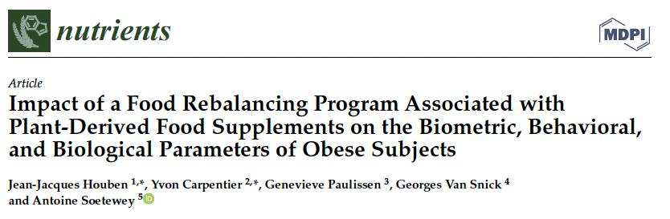

I am happy to announce that our paper has been accepted for publication in Nutrients (ISSN 2072-6643).
This study investigates the impact of a food rebalancing program associated with plant-derived food supplements on the biometric, behavioral, and biological parameters of obese subjects.
Read more here.
Thanks to all co-authors for the great work, and the Nutrients Editorial Office for their guidance throughout this process. We are also thankful to the two anonymous reviewers for their input that has greatly helped shape the paper.
As always, if you have any question related to the topic covered in this paper, please add it as a comment so other readers can benefit from the discussion.